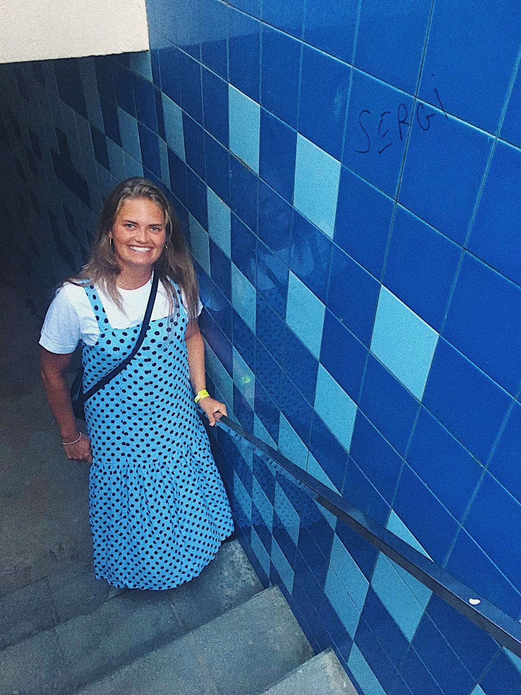
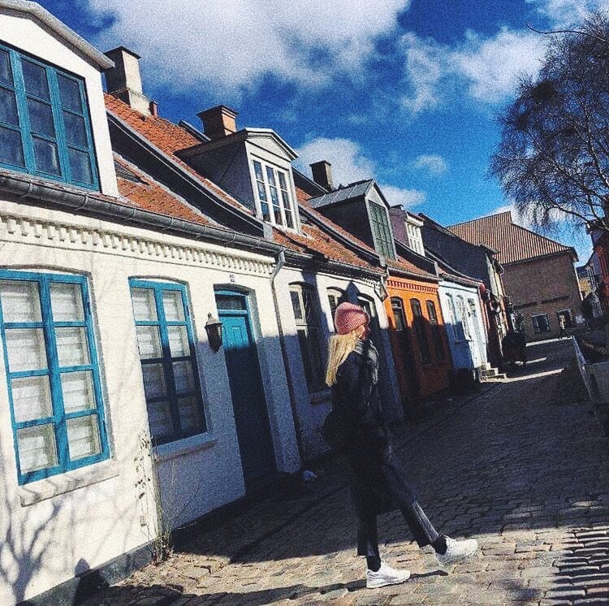
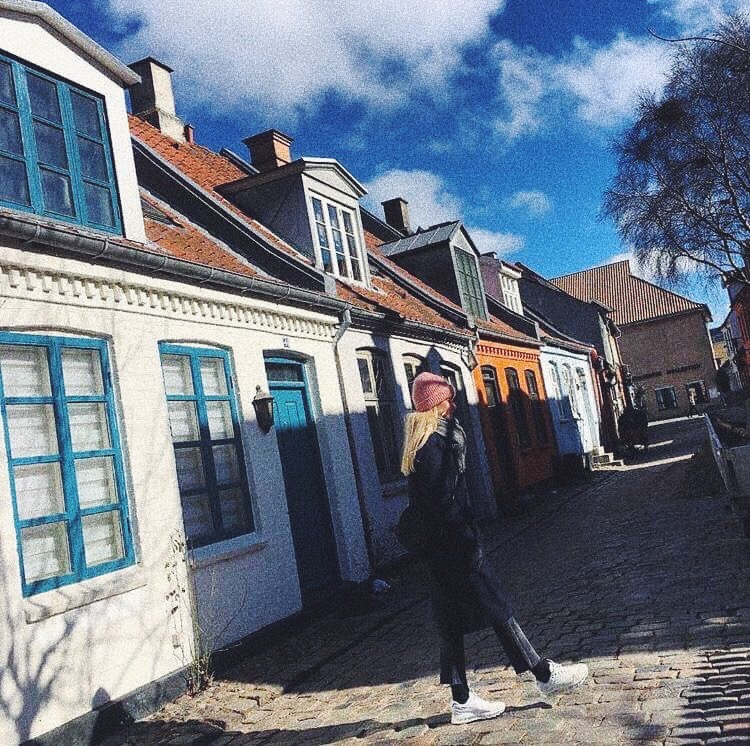

BON
VOYAGE

BON VOYAGE betyder på fransk, God rejse, hvilket jeg ønsker dig, efter du har læst dette magasin.
Hej, jeg hedder Sidsel
… jeg er 22 år og bor i Aarhus, hvor jeg boet har boet i 1 år. For mig er Aarhus en helt ny og STOR by, da jeg er født og opvokset i en lille fiskerby i Vestjylland, Thyborøn.
Herude består de højeste huse af 3 etager, så man kan se lige så langt øjet rækker. Man har både Vesterhavet og Limfjorden i sin baghave, og så får du ovenikøbet den flotteste solnedgang du kan forestille dig.
I Thyboørn kender alle hinanden og man er stort set i familie med alle indbyggere, et eller andet sted langt ude. Man lever altså lidt i sin egen lille boble.
Her er ikke et særligt stort udvalg af hverken butikker eller restauranter, så der skal ikke meget til at imponere mig lige på det punkt.
 

Jeg har i mange år haft en længsel efter at opleve fremmede himmelstrøg og andre kulture. Det skyldes nok, at jeg aldrig rigtig har rejst så meget, udover charterferier med min familie, lige indtil jeg blev færdigt med gymnasiet, hvor jeg tog på min første store rejse ud i verden, sammen med mine bedste veninder.
Her fik jeg virkelig blod på tanden og kun en endnu større trang til at rejse.
Jeg vil sige at rejselysten er en lige så stor del af mig, som min trang til chokolade og søde sager. Derfor har jeg rejst rigtig mange gange de sidste mange år, altid med mine to barndomsveninder/partners-in-crime/roomies/rejsemakkere/soulmates og alt andet kvalmende, som I nu kan finde på, ved min side.
Med en Bucket List så lang, at den kan nå hele vejen rundt om jorden tre gange og tilbage igen, så er jeg blandt de typer af rejsende, som ikke rigtig kan kategoriseres. Jeg rejser for at opleve verden og der er ikke en rejseform der er bedre end en anden i mit univers.
På mit CV kan jeg både skrive roadtip’er uden planlagt rute, backpacker på budget, campist med vandresko og luksus-rejsende til de smukkeste lande du kan forestille dig. Det, der præger mine rejser, er lysten til at lære destinationen at kende.
Dette magasin er altså en inspirerende rejseguide, baseret på min forelskelse i de forskellige lande jeg har besøgt. Alle billeder, holdninger og anbefalinger er derfor mine egne.
God fornøjelse!